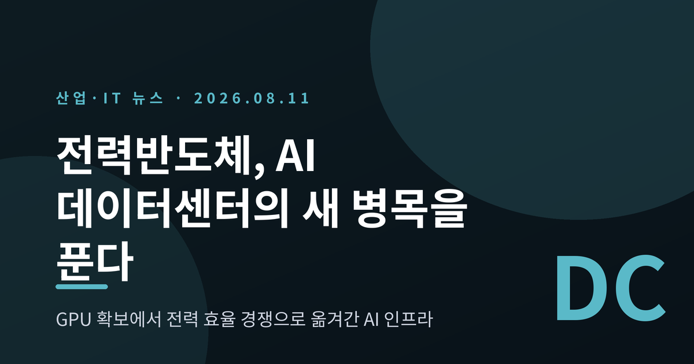
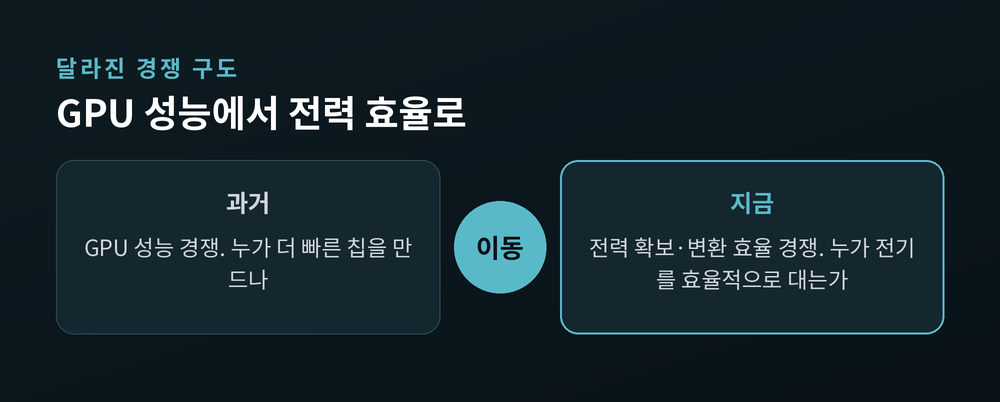
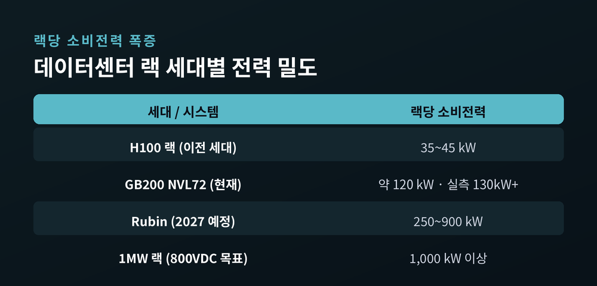
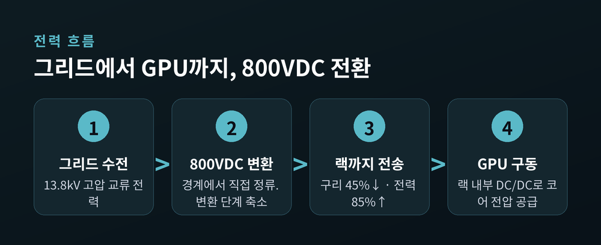
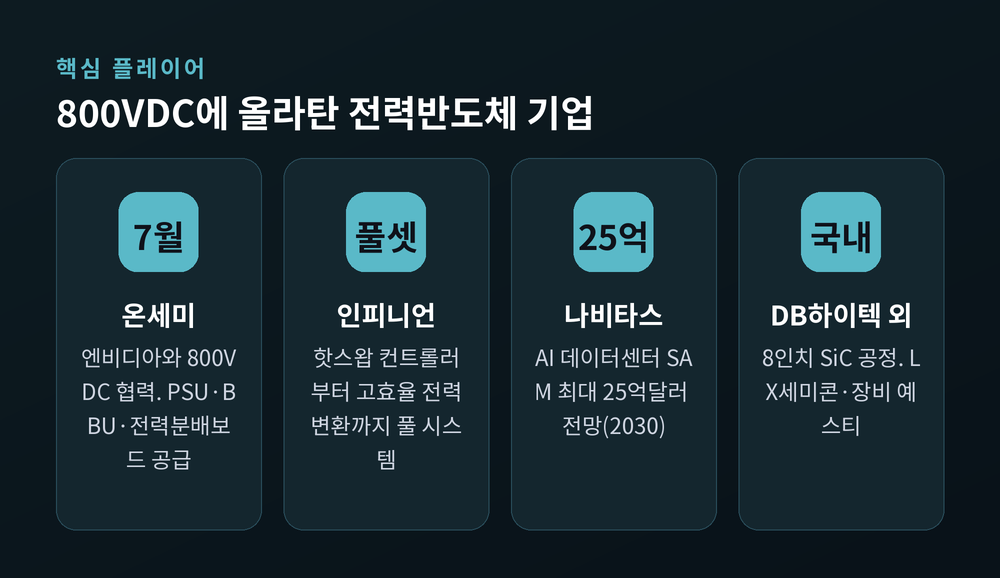
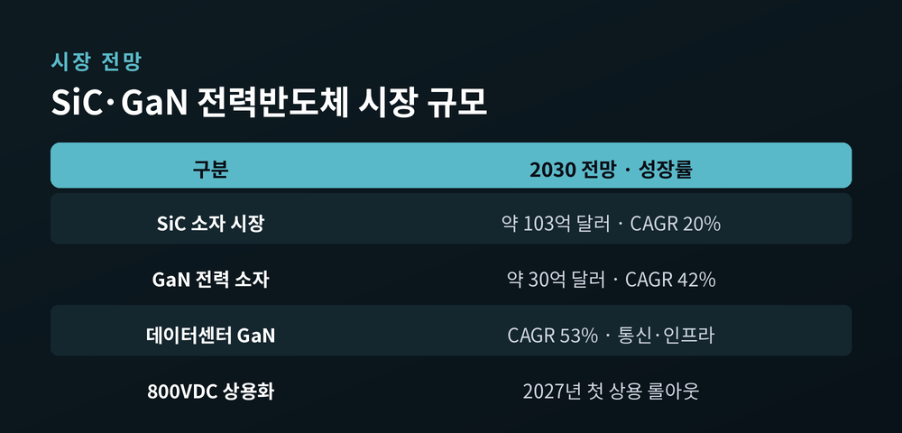

전력반도체가 뜬다, AI 데이터센터 전력 병목이 SiC·GaN 시장을 키우는 이유
이번 글에서는 AI 데이터센터의 병목이 GPU 확보에서 '전력'으로 옮겨간 흐름을 정리해 보겠습니다.
핵심만 먼저 말씀드립니다. AI 서버 한 대가 쓰는 전력이 폭증하면서, 그 전기를 얼마나 효율적으로 공급하고 변환하느냐가 새로운 승부처가 되었습니다. 그 중심에 실리콘카바이드(SiC)와 질화갈륨(GaN) 같은 전력반도체가 있습니다. 메모리 다음 성장축으로 전력반도체가 지목되는 이유를 무슨 일인지부터 짚어 보겠습니다.
무슨 일이 벌어지고 있나
AI 반도체 이야기의 중심이 바뀌고 있습니다.
그동안은 고대역폭메모리(HBM)와 GPU 확보가 전부였습니다. 지금은 '전력반도체'라는 단어가 그 옆에 나란히 놓입니다. 국내외 업계는 메모리에 이어 전력반도체가 AI 시대의 또 다른 수혜 산업으로 떠오를 것이라고 봅니다.
이유는 단순합니다. AI 데이터센터가 기가와트(GW)급으로 커지면서, 전력 손실을 줄이는 SiC·GaN 수요가 빠르게 늘고 있기 때문입니다. AI 서버 한 대에는 수천 개의 GPU가 들어갑니다. 기존 서버보다 몇 배의 전기를 먹습니다. 이 전기를 안정적으로, 손실 없이 공급하려면 고효율 전력반도체가 필수라는 설명입니다.
젠슨 황 엔비디아 CEO의 표현을 빌리면 지금은 'AI 팩토리'의 시대입니다. 그는 연산 성능만이 아니라 전력 인프라의 중요성을 거듭 강조하고 있습니다. 한 반도체 업계 관계자의 말이 이 변화를 압축합니다. "AI 투자 초기에는 GPU와 HBM 확보가 핵심이었다면, 앞으로는 전력 효율이 데이터센터 경쟁력을 결정할 것입니다."

왜 전력이 병목인가 — 랙당 소비전력의 폭증
숫자를 보면 실감이 납니다.
엔비디아의 최신 랙 시스템 'GB200 NVL72'는 한 랙에서 약 120킬로와트(kW)를 소비합니다. 실제 배치 현장에서는 풀로드 기준 130kW를 넘기기도 합니다. 이전 세대인 H100 랙이 35~45kW였으니, 한 세대 만에 전력 밀도가 3~4배로 뛴 셈입니다.
문제는 대부분의 기존 데이터센터가 이 정도 전력을 한 랙에 몰아줄 수 없다는 데 있습니다. GPU를 아무리 확보해도, 그 GPU에 전기를 꽂을 자리가 없는 상황이 벌어집니다. 병목이 '칩'에서 '전기'로 넘어간 것입니다.

앞으로가 더 가파릅니다. 2027년 예정된 차세대 'Rubin' 플랫폼은 랙당 250~900kW를 요구할 전망입니다. 이 때문에 엔비디아와 파트너들은 1메가와트(MW)급 랙을 감당할 새 전력 구조를 준비하고 있습니다.
거시 지표도 같은 방향을 가리킵니다. 국제에너지기구(IEA)는 전 세계 데이터센터 전력 수요가 2030년까지 두 배 이상 늘어 약 945테라와트시(TWh)에 이를 것으로 봅니다. 일본 한 나라의 전체 전력 소비보다 조금 많은 양입니다. 그중 AI가 가장 큰 동인이며, AI 최적화 데이터센터의 전력 수요는 2030년까지 네 배 이상 늘 것으로 전망됩니다.
배경·쟁점 (1) — 엔비디아의 '800볼트 직류' 전환
전력 병목을 푸는 열쇠로 떠오른 것이 전력 아키텍처의 전환입니다.
엔비디아는 랙 내부 전력 분배 방식을 기존 54볼트 직류(54VDC)에서 800볼트 직류(800VDC)로 바꾸는 계획을 주도하고 있습니다. 왜 바꿔야 할까요. 랙이 200kW를 넘어서면 낡은 방식이 물리적 한계에 부딪히기 때문입니다.
한계는 세 가지로 요약됩니다. 첫째, 공간입니다. 같은 54VDC로 MW급을 구현하면 전원 장치가 랙 공간의 상당 부분을 차지해 정작 연산 칩을 넣을 자리가 사라집니다. 둘째, 구리입니다. 단일 1MW 랙에 최대 200킬로그램(kg)의 구리 부스바가 필요합니다. 1GW 데이터센터라면 부스바에만 최대 20만kg의 구리가 들어갑니다. 셋째, 반복되는 교류·직류 변환이 전력을 갉아먹고 고장점을 늘립니다.

800VDC로 바꾸면 효과가 분명합니다. 같은 굵기의 도선으로 85% 더 많은 전력을 보낼 수 있습니다. 전류가 낮아지니 구리 사용량은 약 45% 줄어듭니다. 전체 효율은 현행 대비 최대 5%포인트 개선되고, 총소유비용(TCO)은 최대 30%까지 낮아진다고 엔비디아는 설명합니다. 800VDC 데이터센터의 본격 양산은 2027년, 차세대 'Kyber' 랙과 함께 시작됩니다.
여기서 SiC와 GaN이 주인공으로 등장합니다. 고전압을 손실 없이 빠르게 스위칭하려면, 기존 실리콘보다 고전압·고온에 강하고 발열이 적은 이 소재가 필요합니다. 그리드에서 들어온 고압 전기를 800VDC로 바꾸는 정류기, 전원공급장치(PSU), 전력변환장치, UPS까지 곳곳에 전력반도체가 박힙니다.
배경·쟁점 (2) — 누가 뛰어들고 있나
엔비디아가 판을 깔자, 전력반도체 기업들이 줄지어 올라탔습니다.
엔비디아의 'MGX 전력 생태계' 파트너 명단에는 인피니언, 온세미, 나비타스, 아나로그디바이스, ST마이크로일렉트로닉스, 로옴, 텍사스인스트루먼츠 등이 이름을 올렸습니다. 전력 시스템 쪽으로는 델타, 슈나이더일렉트릭, 이튼, 버티브 등이 함께합니다.

구체적인 움직임도 나옵니다. 온세미는 2025년 7월 엔비디아와 800VDC 전환 협력을 발표하고, 전원공급장치와 배터리 백업 유닛, 800VDC 전력분배보드 등을 공급하기로 했습니다. 인피니언은 핫스왑 컨트롤러부터 고효율 전력변환까지 아우르는 풀 시스템 솔루션을 내놓았습니다. 나비타스는 AI 데이터센터만으로 2030년까지 14억~25억 달러 규모의 시장 기회가 열릴 것으로 봅니다.
국내 기업도 서두릅니다. DB하이텍은 8인치 SiC 공정 기반 구축을 추진하고 있습니다. LX세미콘은 디스플레이 구동칩을 넘어 차량용·산업용 전력반도체로 발을 넓히고 있습니다. 장비업체 예스티는 전력반도체 공정용 열처리 장비 사업을 키우며 수혜를 기대합니다. 삼성전자와 SK 역시 반도체와 AI 데이터센터에 대규모 투자 방침을 밝혔고, GW급 데이터센터의 전력 수요가 그 배경 중 하나로 꼽힙니다. 다만 이들 투자액은 초장기 구상 성격이 커서, 확정된 숫자로 받아들이기보다 방향성으로 읽는 편이 맞습니다.
시장은 얼마나 커지나 — 그리고 그늘
전망 수치는 화려합니다. 그러나 그늘도 함께 봐야 합니다.
시장조사기관 욜(Yole)은 SiC 소자 시장이 2030년 약 103억 달러 규모로, 2024년부터 연평균 약 20% 성장할 것으로 봅니다. GaN 전력 소자는 더 가팔라서 2030년까지 연평균 42% 성장해 약 30억 달러에 이르고, 데이터센터를 포함한 통신·인프라 부문은 연 53%로 뛸 전망입니다.

다만 지금 당장은 순풍이 아닙니다. 예전엔 전기차가 SiC 시장을 끌어올렸습니다. 지금은 그 전기차 수요가 둔화되면서, SiC 업계는 2025년 가동률이 상류공정 약 50%까지 떨어진 조정 국면에 들어섰습니다. 욜은 이 과잉공급이 2027~2028년까지 이어질 것으로 봅니다. 여기에 중국이 2024년 이미 SiC 웨이퍼 생산능력의 약 40%를 확보하며 빠르게 추격하고 있습니다. 시장 전망치가 기관마다 크게 엇갈린다는 점도 감안해야 합니다.
정리하면 이렇습니다. 전기차가 남긴 빈자리를 AI 데이터센터라는 새 수요축이 메우기 시작한 국면입니다. 아직 완성된 그림은 아닙니다.
끝으로 한 가지만 덧붙이겠습니다.
AI 경쟁의 무게중심은 조용히 이동하고 있습니다. 더 빠른 칩을 만드는 싸움에서, 그 칩에 전기를 대는 싸움으로 말입니다.
"AI의 다음 병목은 연산이 아니라 전력이다." 이 문장이 앞으로 몇 년의 산업 지도를 그릴 것입니다.
전력반도체가 정말 HBM의 뒤를 이을지, 그 답이 궁금하시다면 2027년의 데이터센터를 지켜보시길 권합니다.